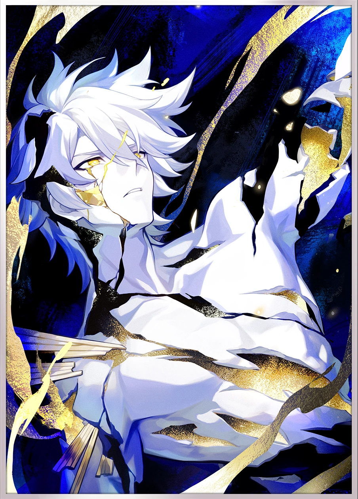
Phainon - Khaslana
Um guerreiro ligado ao destino de Amphoreus.
Conheça os personagens de Amphoreus.

Um guerreiro ligado ao destino de Amphoreus.
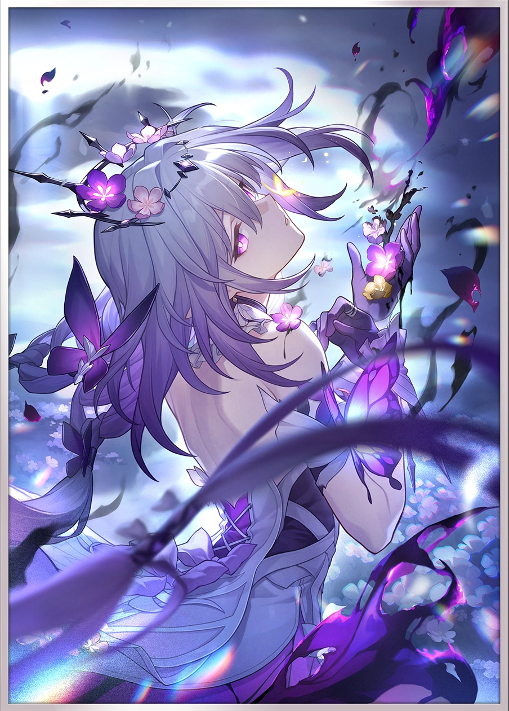
Uma personagem misteriosa associada à morte.
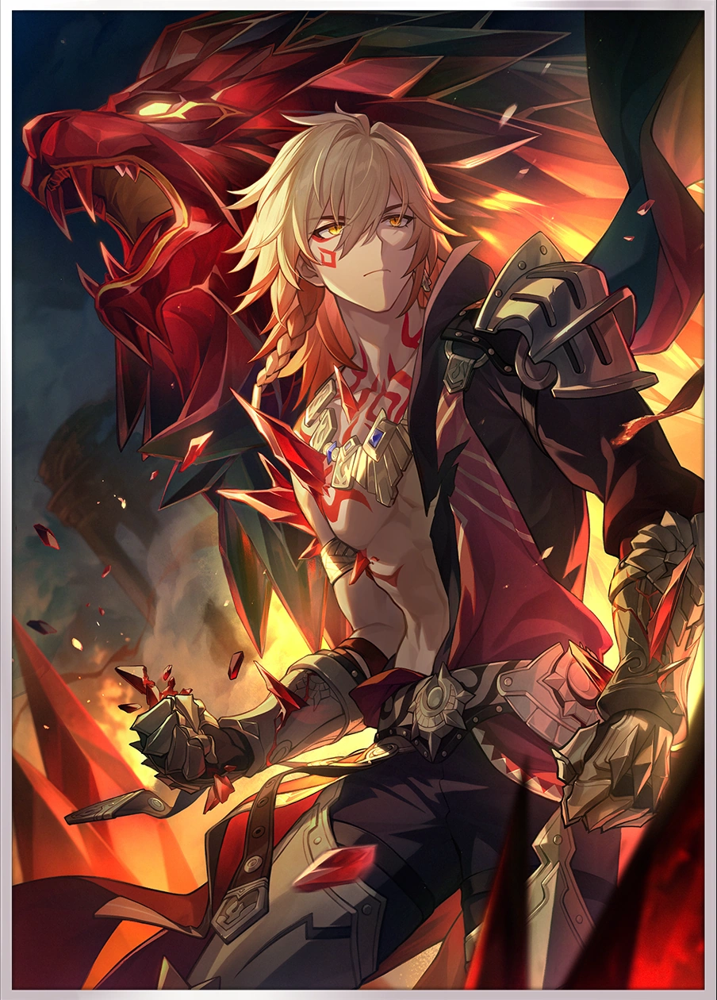
Um guerreiro de grande força e determinação.
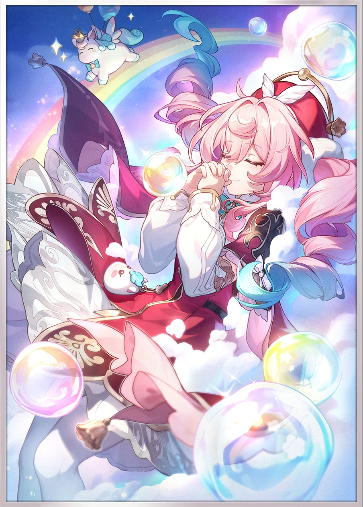
Uma curandeira que protege seus aliados.
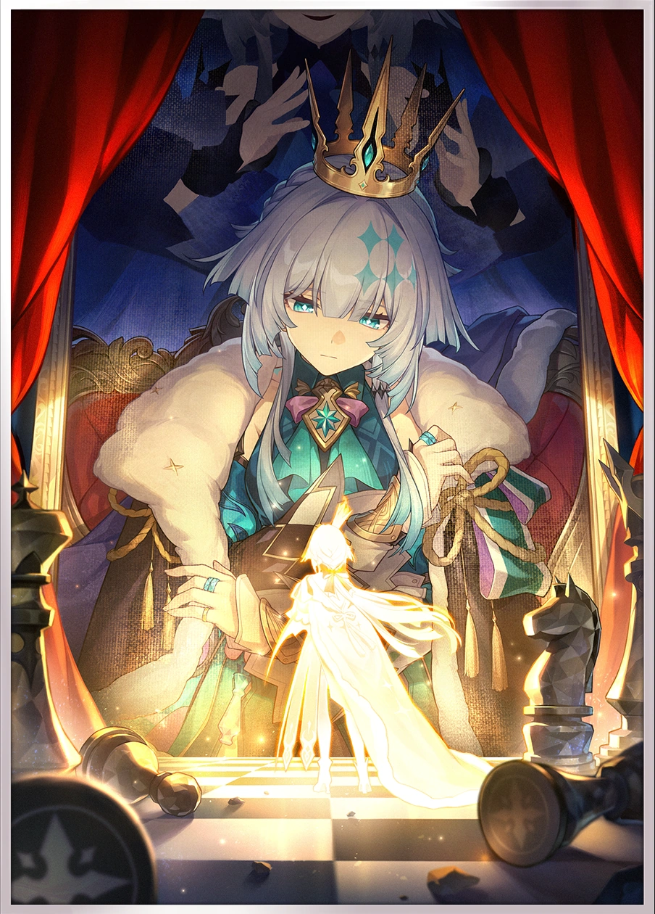
Uma figura de liderança e estratégia em Amphoreus.
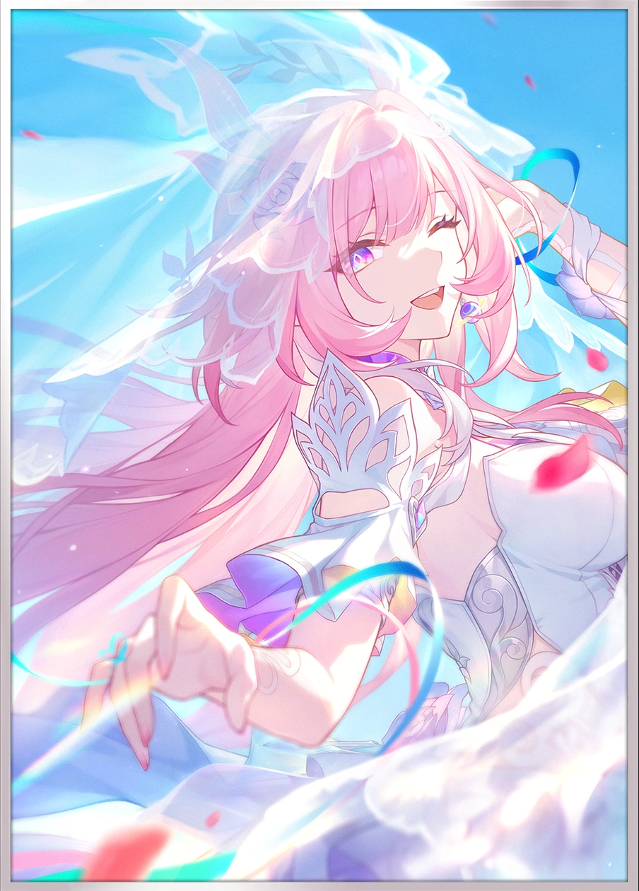
Uma personagem ligada às memórias e ao destino do mundo.
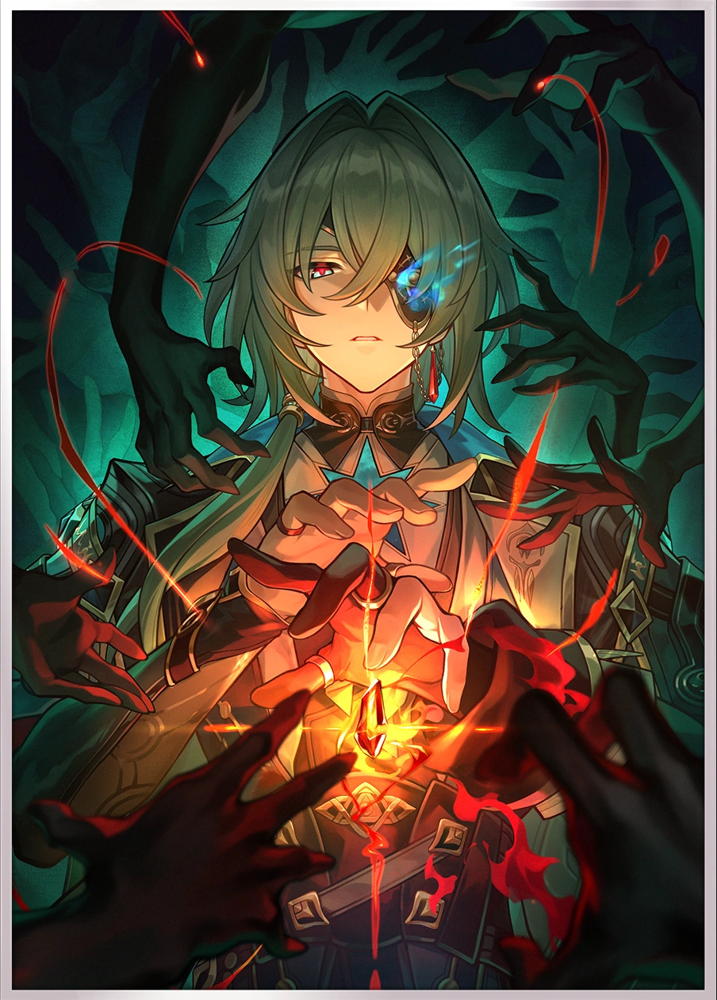
Um estudioso que busca compreender os mistérios do universo.
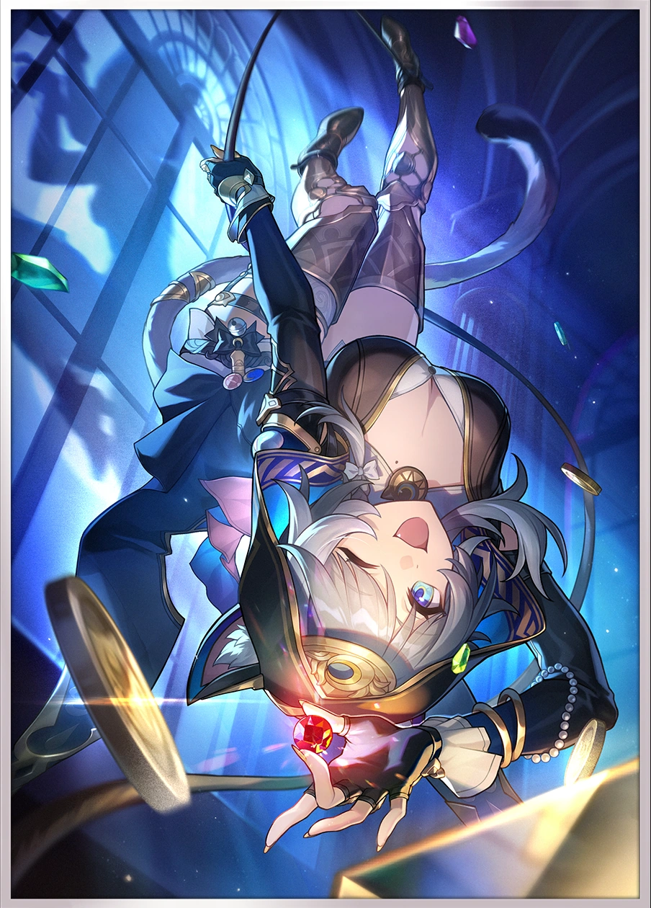
Uma personagem astuta, conhecida por seus segredos.
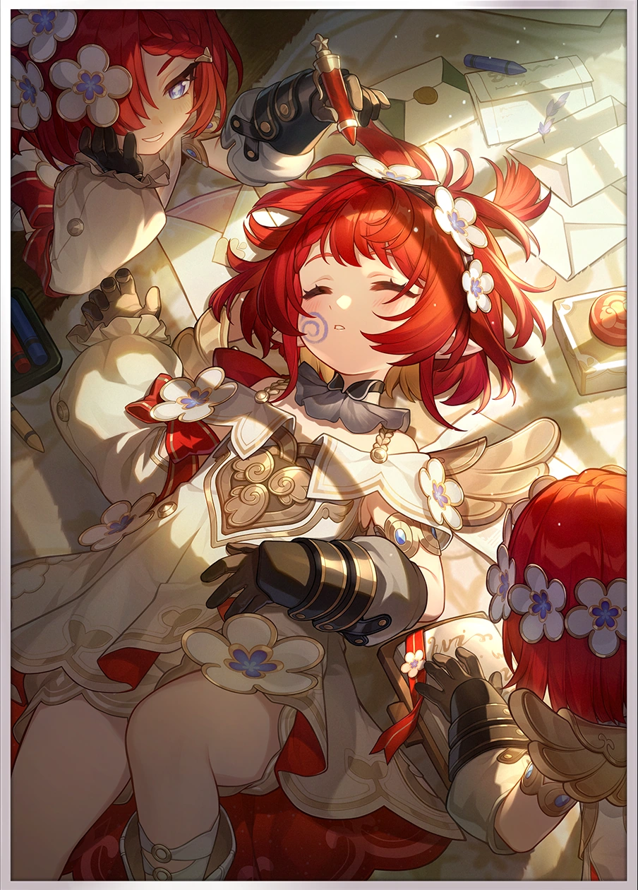
Uma personagem importante na jornada pelos mistérios de Amphoreus.
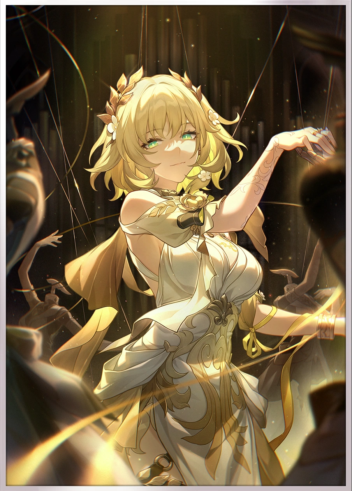
Uma figura central entre os Herdeiros de Chrysos.
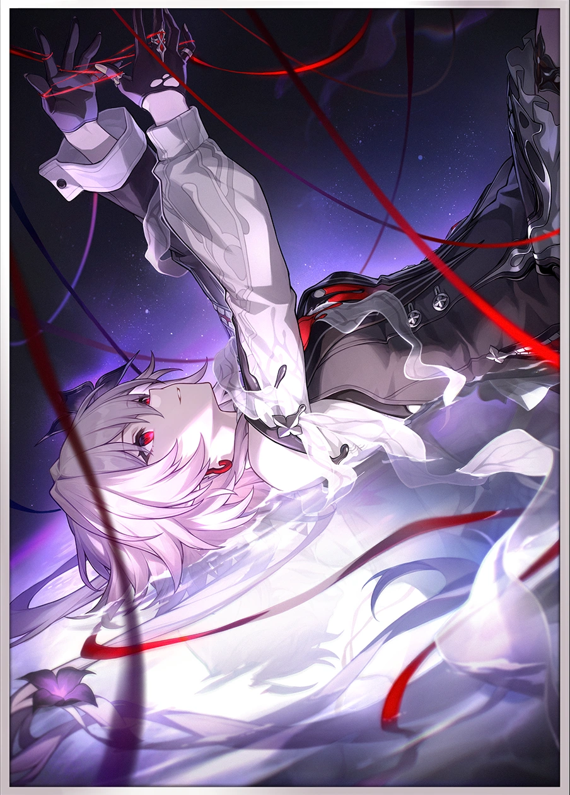
Uma personagem envolta em mistérios relacionados à memória.
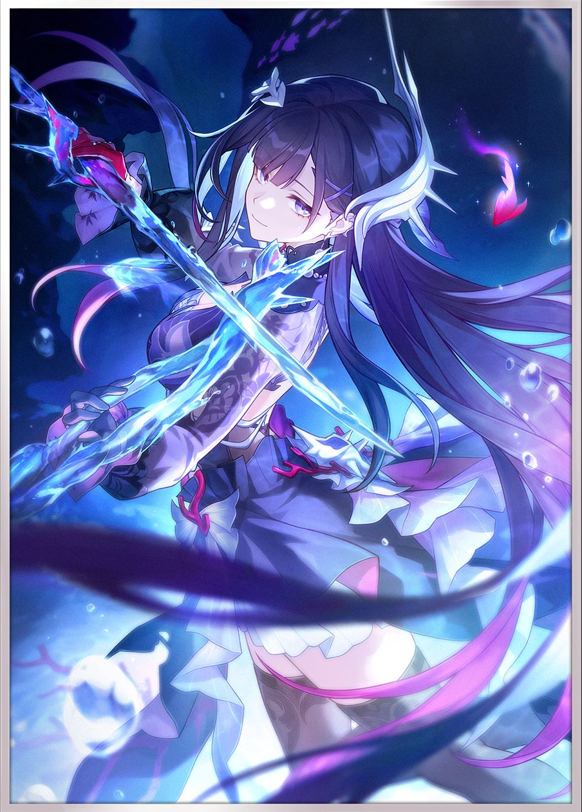
Uma guerreira ligada aos conflitos e aos segredos de Amphoreus.

Um guerreiro reservado que luta com precisão e velocidade.